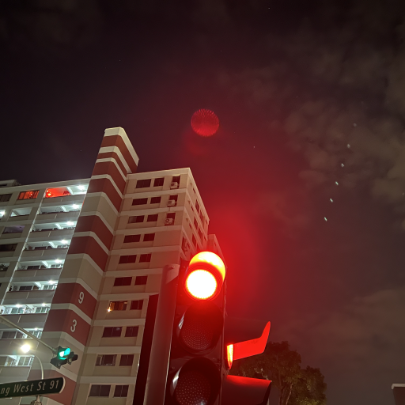
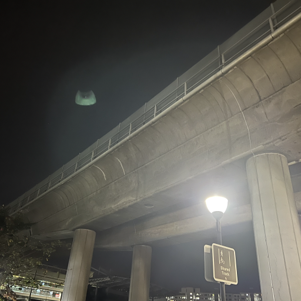
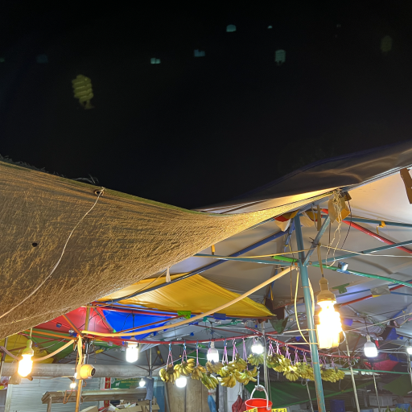
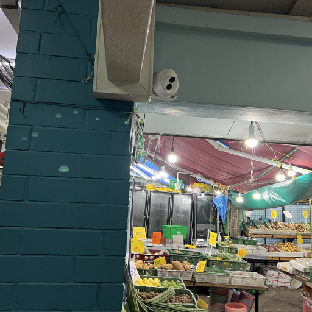
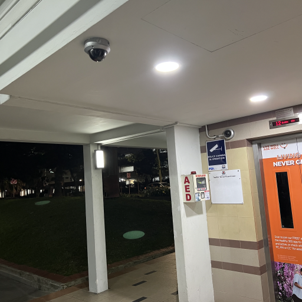
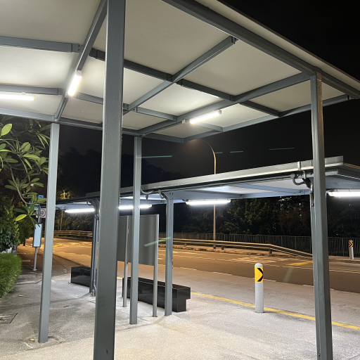
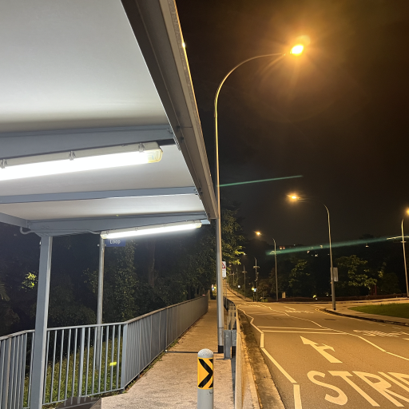
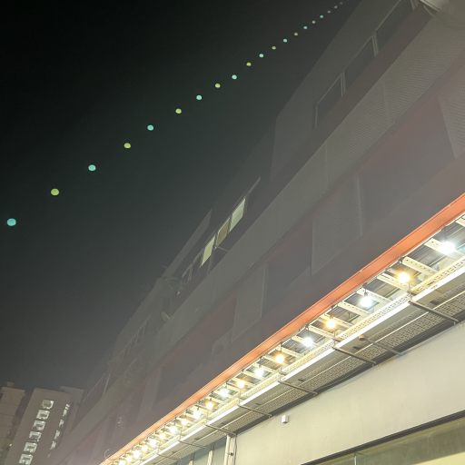
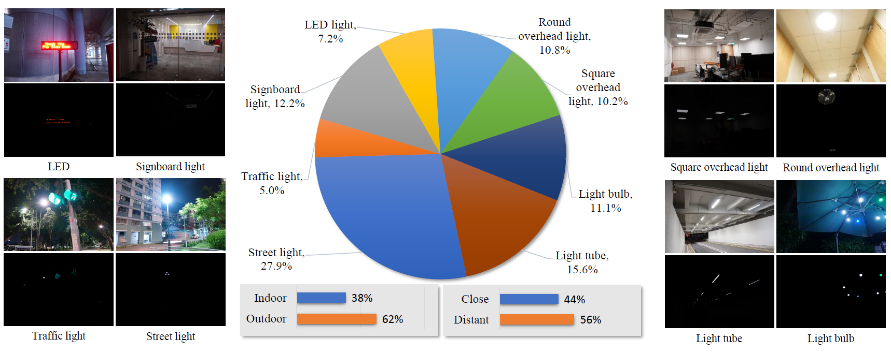
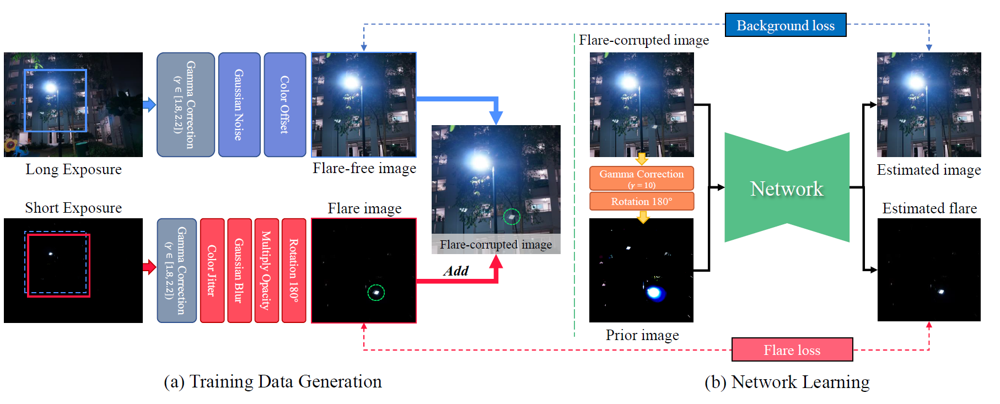

Nighttime Smartphone Reflective Flare Removal
using Optical Center Symmetry Prior
|  |  |  |  |
|  |  |  |  |
MouseOver: Flare-removed images with our method
MouseOut: Real-captured nighttime flare-corrupted images
Abstract
Reflective flare is a phenomenon that occurs when light reflects inside lenses, causing bright spots or a ''ghosting effect'' in photos,
which can impact their quality. Eliminating reflective flare is highly desirable but challenging.
Many existing methods rely on manually designed features to detect these bright spots,
but they often fail to identify reflective flares created by various types of light
and may even mistakenly remove the light sources in scenarios with multiple light sources.
To address these challenges, we propose an optical center symmetry prior,
which suggests that the reflective flare and light source are always symmetrical around the lens's optical center.
This prior helps to locate the reflective flare's proposal region more accurately and can be applied to most smartphone cameras.
Building on this prior, we create the first reflective flare removal dataset called BracketFlare,
which contains diverse and realistic reflective flare patterns. We use continuous bracketing
to capture the reflective flare pattern in the underexposed image and combine it with a normally exposed image
to synthesize a pair of flare-corrupted and flare-free images.
With the dataset, neural networks can be trained to remove the reflective flares effectively.
Extensive experiments demonstrate the effectiveness of our method on both synthetic and real-world datasets.
Links

Video
Dataset

Visualization of typical examples and distribution of our dataset. The dataset provides different types of light sources in diverse scenes. Based on light source types, we classify them into eight categories with different flare patterns.
Training pipeline Overview

We referred to the project page of Nerfies, AvatarCLIP and Text2Human when creating this project page.
This project is licensed under NTU S-Lab License 1.0. Redistribution and use should follow this license.